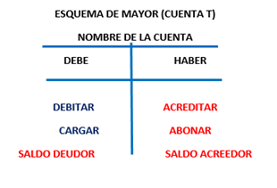

Cuando se habla de una cuenta T, se refiere al método para registrar los hechos económicos de un negocio. Se trata de una de las herramientas contables más utilizadas para organizar, clasificar y entender el comportamiento de las cuentas.
En una cuenta T se distinguen los siguientes elementos: el nombre de la cuenta, el saldo y las dos columnas del Debe y el Haber.
El Debe se registra en el lado izquierdo de la cuenta para indicar los ingresos o aumentos en el negocio. Si la suma del Debe es mayor que la del Haber, significa que existe un saldo deudor en las cuentas contables. Por otro lado, el Haber se ubica en el lado derecho para reflejar los egresos o disminuciones. Si la suma del Haber es mayor que la del Debe, el saldo es acreedor.
